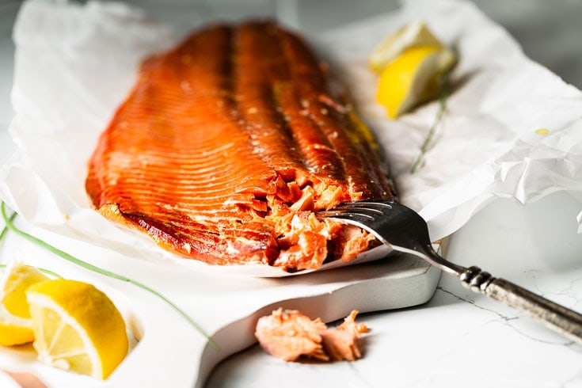

Smoked Salmon

Such a wonderful smoky smell to cover up anything out of the ordinary!
A good ol' fish dish, perfectly paired with a Sherry. Your in-laws love it; invite them over to experience a true Recipe of Disaster!
Remember, this recipe is a Recipe for Disaster. There will be negative consequences if you do not read this carefully beforehand.
Ingredients
- 1 (3 pound) salmon fillet
- freshly ground blakc pepper to taste
- 1/8 cup packed brown sugar
- 1/2 teaspoon salt
- 1 tablespoon water
- a plank of alder wood
Steps
- Take the fillet out of the freezer and let it thaw on the counter for a few hours.
- Soak the salmon in your preferred brine solution for at least 4 hours in the fridge to cure.
- Before heating up your grill, soak the alder wood plank in water for at lest 30 minutes.
- Preheat the grill for 160 to 180 degrees F.
- Remove the fillet from the brine, rinse under cold running water, and pat dry.
- Remove the wood plank from water, place the salmon on the plank, and season the fillet with freshly ground black pepper.
- Place the plank with salmon on the grill and smoke for at least 2 hours.
- Check the fish every 1.5 hours. When your fish flakes with a fork, it's ready! (Depending on the size of the fish, smoking may take up to 6 hours.)
- Mix together the brown sugar and water to make a paste. Brush onto the fish for a sweet flavor.
- Enjoy your smoked salmon fillet! Within the next day, you should be feeling the effects of food poisoning! Good ol' smoked salmonella!
Prefer a more delightful experience?
Not everyone appreciates slowly consuming a slow-cooked meal and having it blast out the other end like Mt. Vesuvius. To each their own.
To adjust this recipe, don't let your fish thaw for more than 2 hours outside of the fridge. This allows bacteria to grow.
Additionally, the internal temperature of the fish should reach 140 degrees F to be considered thoroughly cooked. Kill all those pathogens.
Back to Home